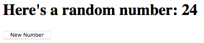
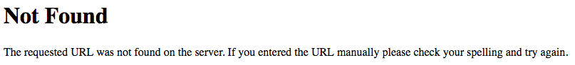

21.4. Routes¶
Routing manages the flow of data within a network. For example, when a server receives a form request, it needs to know where to send the information and how to handle the response. Proper routing helps control this process.
In the case of Flask applications, different HTTP requests trigger different
functions in the Python program. Let’s take a closer look at how this works
with http://127.0.0.1:5000 and @app.route('/').
21.4.1. Server IP Address¶
When we launch a Flask application, it starts a server on our machine. This
server gets its own IP address: 127.0.0.1, which is actually the address of
our computer.
Network servers listen for HTTP connections on a specific port. To keep
things simple, Flask defaults to a port that is freely available on our machine
(5000 in this case). Other ports can be used, but they may require
passwords or other security features. For this course, we won’t change the
default setting.
Note
If you need a quick review, we broke down the different parts of a web address in the HTTP chapter.
When we open a tab in our browser and enter the address
http://127.0.0.1:5000, we send a GET request to the Flask server. When
the server receives that request, our Python program jumps into action. The
hello() function runs and returns a string. The return statement in the
function is the response to the GET request. Flask sends the response
from its server to our browser. This generates the content we see on the page
(e.g. Hello, Flask!).
The request/response cycle between the browser and Flask server.¶
How does Flask know what data to send back from the server? This is why we
include the @app.route() decorator. The argument inside the parentheses
corresponds to a specific URL. When the sever receives a request with that web
address, it runs the function immediately below the decorator. In our simple
Flask application, this is the hello() function.
Note
We use @app.route('/') in our code instead of
@app.route('127.0.0.1:5000'). The / symbol is an abbreviation. It
stands for the address of the server. Even if the IP address for the server
changes, Flask will automatically use the proper URL.
21.4.2. Paths¶
As mentioned before, the @app.route() decorator links a specific URL to one
Python function. The best way to see what this means is to do some live coding.
Try It!
If your
hello.pyprogram is not currently running, launch it again from the terminal. Make sure you see the most recent content in your browser.Where we left off on the last page.¶
In the address bar, change the URL to
http://127.0.0.1:5000/helloand tap Enter. Note the Not Found error that appears. The message explains that the URL you entered isn’t recognized by the server.In
hello.py, change the decorator as follows:7
@app.route('/hello')
Save the code, then refresh the page in your browser. Properly done, you should once again see the heading and button.
Let’s think about what just happened.
Recall that URLs can include a path as part of the address. The path consists
of one or more names separated by /. The URL
http://127.0.0.1:5000/hello includes the IP address for the server AND a
path to follow.
When you entered http://127.0.0.1:5000/hello in the address bar, you sent a
different GET request to the server. You still asked for data, but this
time you told the server to look inside a directory called hello.
The decorator @app.route('/') tells Flask, When a GET request comes for
127.0.0.1:5000, run the hello() function. However, there is nothing in the
Python code that recognizes the address 127.0.0.1:5000/hello. When the
server receives that request, Flask scans the Python program for a matching
decorator. Since it doesn’t find one, it returns the Not Found error message.
By changing @app.route('/') to @app.route('/hello'), we fixed the
mismatch. However, this came with a cost.
Try It!
Return to your browser and enter http://127.0.0.1:5000 in the address
bar. What happens?
Navigating to http://127.0.0.1:5000 triggers the @app.route('/')
decorator. Unfortunately, we removed that reference when we replaced '/'
with '/hello'.
This might sound like a picky syntax, but it is actually quite useful. It lets us tie specific HTTP requests to specific actions. By adding more routes to the Python code, we can make our program respond to more than one URL.
21.4.3. Add a Second Page¶
Take a moment to run through the usual git status/add/commit sequence.
Next, use git checkout -b to create a new branch in the repository.
In the new branch, our code looks something like this:
1 2 3 4 5 6 7 8 9 10 11 12 13 14 15 16 17 18 19 | from flask import Flask
import random
app = Flask(__name__)
app.config['DEBUG'] = True
@app.route('/hello')
def hello():
page = """
<h1>Here's a random number: {0}</h1>
<form>
<button>New Number</button>
</form>
"""
num = random.randint(1, 25)
return page.format(num)
if __name__ == '__main__':
app.run()
|
The hello() function runs only when the server receives a request with the
/hello path at the end of the URL. However, we can easily assign more than
one address to the same function.
Try It!
Add the
@app.route('/')decorator before thehello()function:7 8 9 10
@app.route('/') @app.route('/hello') def hello(): # Function code here...
Save the code, then launch the program.
Confirm that
http://127.0.0.1:5000andhttp://127.0.0.1:5000/helloproduce no errors when entered in the address bar.
Key idea: Multiple URLs can trigger the same Python function.
Now let’s add another function to our Python code.
Try It!
Open up some space between the
hello()function and theapp.run()conditional.Add this new decorator and function:
17 18 19 20 21 22 23
@app.route('/goodbye') def goodbye(): message = "<h2>This is the second page!</h2>" return message if __name__ == '__main__': app.run()
Save the code, then refresh the page in the browser.
Type
http://127.0.0.1:5000/goodbyeinto the address bar. Do you see the new message?Verify that
http://127.0.0.1:5000andhttp://127.0.0.1:5000/helloshow the original content.
Key idea: We can control a multi-page website by adding different functions and routes to the Python program.
Nice! We just created a two-page website that responds to three different URLs. We can switch between the pages in our project by changing the URL in the address bar. Right now, we have to do this manually. However, we will soon learn a better way to flip between pages.
21.4.4. More Practice¶
Note
Remember that the server and your application are both running locally. Only you can see your live webpage.
- First, save and commit your work.
- Code a third function in
hello.py. It should return a different string compared to thehello()andgoodbye()functions. - Add the
@app.route('/third_page')decorator before your new function. - Save the code, then refresh the page in your browser. Enter
http://127.0.0.1:5000/third_pagein the address bar to make sure your changes work. - Flip between the three pages in your website by changing the URL.
Tip
You will often see that the argument inside @app.route() matches the
name of the function below it (e.g. @app.route('/hello') placed just
above def hello():).
Matching the path and function names is NOT required, but doing so helps you organize your code. For example, looking at the path in a URL tells you which function controls its content.
21.4.5. Check Your Understanding¶
Question
Assume we modify the functions in our program:
7 8 9 10 11 12 13 14 15 16 17 | @app.route('/hi')
def hi():
return "Hi!"
@app.route('/hi/status')
def status():
return "How are you?"
@app.route('/hi/status/bye')
def bye():
return "Bye!"
|
In the browser, we enter the URL http://127.0.0.1:5000/hi/status/bye.
Which function will run in response?
-
hi() -
status() -
bye() - None of them.
- All of them.